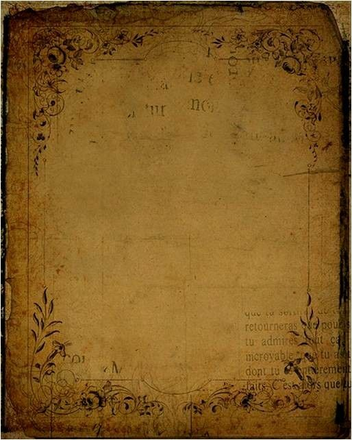

Você recebeu uma carta misteriosa... O que fazer?
A carta revela um aviso de perigo e menciona um velho casarão
Acontecem eventos sobrenaturais na casa (portas se abrem sozinhas, vozes sussurrantes)
Você vai até o casarão e encontra um diário antigo.
Os eventos sobrenaturais se intensificam, levando Você a ter pesadelos horríveis
O diário conta a historia de uma maldição que ainda paira sobre o lugar
Você sente que está sendo observado contantemente
Você realiza um ritual, mas precisa escolher entre sacrificar algo querido ou deixar a maldição continuar
A maldição é quebrada, mas você carrega a culpa pelo resto da vida
A maldição continua, e você fica preso no casarãopara sempre